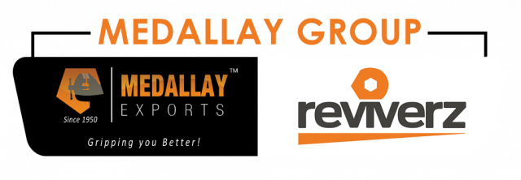

Материал компании

MITEX 2026 · Индия · Стенд 7C302
Medallay Group India
Карточка проверена 10 ноября 2026, 09:28 · Источник ↗ · Снимок оригинальной карточки ↗
О компании
Medallay Group India — индийская производственно-экспортная группа, обладающая богатым опытом в сфере промышленного и профессионального инструмента. Через компании Medallay Exports и Reviverz группа предлагает широкий ассортимент продукции для мирового рынка.
Контакты
Все контактные сведения из карточки
Контакты Medallay Exports Телефон: +919888700490 E-mail: marketing@medallayexports.com Адрес: 144025, Индия, Punjab, Jalandhar, Village Dhogri, Pathankot Road Веб-сайт: http://www.medallayexports.com E-mail: marketing@medallayexports.com Телефон: +919888700490
Ранее найденные соцсети — октябрь 2026
Эти ссылки найдены при предыдущем обходе сайтов компаний. Актуальность контактов уточняйте у участника.
Все рубрики участника
Mitex - Рубрикатор
- 5. Слесарный, монтажный, столярный, ручной инструмент
- 8. Инструмент и оборудование для автосервиса
Зал
- Зал № 7
Участник выставки
- MITEX
Фотографии и изображения
Видео, каталоги и документы
Материал компании
Spanners & Wrench Catalogue
Открыть у участника ↗Материал компании
Hammers Catalogue.pdf
Открыть у участника ↗Материал компании
Medallay Exports Company Profile.pdf
Открыть у участника ↗Каталог продукции участника
Материалы каталога
Medallay Group Company Profile & Product Catalogue
Medallay Group Company Profile & Product Catalogue
Medallay Group Company Profile & Product Catalogue Medallay Group is a growing force in the tools and industrial products sector, bringing together specialized brands designed to meet the needs of professionals, tradespeople, and global markets. With a focus on quality, functionality, durability, and product innovation, the Group offers a diverse portfolio across hand tools, hammers, professional tool storage solutions, and specialized export offerings. Our brand portfolio includes: Medallay Exports — Specialist export solutions, connecting quality products with international markets. Pro Wear by Reviverz — Professional-grade tool bags and carrying solutions designed for convenience, organization, and durability. Reviverz Hand Tools — A versatile range of reliable hand tools developed for professional and everyday applications. Pro Strike by Reviverz — A dedicated range of hammers engineered for performance, strength, and demanding tasks. Together, these brands reflect Medallay Group's commitment to delivering practical, dependable, and market-focused solutions to customers worldwide. Medallay Group — Building Brands. Delivering Performance. Expanding Globally. Вложения ProWear By Reviverz Catalogue 27.08.2026 1 2.61 MB Spanners & Wrench Catalogue 27.08.2026 1 2.92 MB Hammers Catalogue.pdf 27.08.2026 3 7.48 MB Medallay Exports Company Profile.pdf 27.08.2026 1 12.5 MB
Новости из карточки
Новость участника
27.08.2026 07:50 A bench vice is one of the most fundamental fixtures in any workshop or industrial setup. Yet for global buyers and importers, selecting the right bench vice goes beyond jaw width and clamping force. Export market buyers apply a rigorous evaluation framework that accounts for material quality, dimensional tolerances, surface finish, and packaging — all of which determine whether a product succeeds in competitive international markets. Jaw Width and Clamping Force The two most cited specifications are jaw width and maximum clamping force. Jaw widths typically range from 75mm to 200mm for industrial vices, with clamping forces measured in kilonewtons. Buyers should align these specifications with their intended use — lighter fabrication work requires different specs than heavy-duty metalworking. However, published specifications only matter if they are consistently achievable in production. Global buyers increasingly request third-party test reports to verify that declared clamping forces are accurate across production batches. Material Grade: Cast Iron vs Ductile Iron Cast iron bench vices dominate the market due to cost efficiency, but ductile iron — which incorporates graphite in a nodular form — offers significantly better impact resistance. For export to markets where vices are used in demanding environments (heavy fabrication, shipbuilding, construction), ductile iron represents a meaningful quality upgrade that buyers in Europe, Australia, and North America actively seek. Surface Finish and Corrosion Resistance For export shipments that spend weeks in containers crossing oceans, surface protection is critical. Buyers evaluate: · Powder coating — durable, even finish that resists chipping and corrosion · Epoxy paint — common on mid-range vices, adequate for indoor use · Rust inhibitor treatment — applied before packaging to prevent transit corrosion Arriving at a destination with rusted or chipped vices creates immediate buyer complaints and costly return logistics. Surface finish quality is a reputational factor, not just an aesthetic one. Swivel Base and Precision A swivel base allows the vice to be repositioned without unbolting — a significant productivity feature in multi-task workshops. Global buyers examine the swivel mechanism's lock integrity: a base that drifts under load is a liability. Precision machining on the swivel and base mating surfaces is a key differentiator between entry-level and professional-grade vices. Packaging for Export Bench vices are heavy, dense products prone to damage during long-haul shipping. Serious export buyers evaluate packaging as part of the product: · Individual foam or bubble-wrap protection around jaw faces · Corrugated box strength rated for stacking weight · Pallet configuration — how many units per pallet without exceeding freight limits · Clear country of origin labeling and compliance markings Medallay's Bench Vice Offering Medallay Exports supplies bench vices built for export market expectations — from material grade and surface finish to packaging integrity and documentation. For buyers sourcing from international markets, Medallay provides product consistency that supports brand reputation across borders. A vice that fails on arrival costs more than twice its purchase price — in returns, in reputation, and in the time spent resolving complaints.
Новость участника
27.08.2026 07:50 Introduction Chrome Vanadium steel - commonly abbreviated as CRV or Cr-V has been the material of choice for professional hand tools for decades. Despite the development of newer alloys and composites, CRV remains the benchmark for spanners, wrenches, screwdrivers, and pliers used in demanding professional environments. Understanding why helps buyers make better sourcing decisions. What Is Chrome Vanadium Steel? Chrome Vanadium is an alloy steel that combines chromium and vanadium with a carbon steel base. Chromium improves hardness, corrosion resistance, and wear resistance. Vanadium refines the grain structure of the steel, improving toughness and resistance to impact fatigue. Together, they produce a material that is hard enough to hold an edge or maintain dimensional accuracy under torque, yet tough enough to absorb repeated impact without fracturing. Why CRV Outperforms Standard Carbon Steel in Tools Standard carbon steel tools are less expensive to produce but have meaningful limitations. They are more susceptible to corrosion, more likely to deform under repeated high-torque application, and less resistant to the fatigue that builds up over time in repetitive-use environments. CRV tools, by contrast, maintain their geometry over sustained use. A CRV spanner that has been used for ten thousand tightening cycles should perform the same as on day one — provided it has been manufactured correctly and finished with an appropriate protective coating. Applications Where CRV Is the Standard CRV is the default material specification for professional-grade spanners, combination wrenches, screwdriver blades, and plier jaws across the automotive, construction, industrial maintenance, and manufacturing sectors. In export markets — particularly Europe and North America — buyers routinely specify CRV as a minimum material requirement for professional tool categories. What to Look for When Sourcing CRV Tools Not all CRV tools are equal. The quality of the alloy mix, the heat treatment process, and the surface finish all determine real-world performance. Buyers sourcing at volume should look for: • Verified material certification from the manufacturer • Drop-forged construction rather than cast — for improved structural integrity • Appropriate heat treatment for the specific tool application • Chrome or phosphate finish for corrosion resistance • Independent quality certification from a recognised body Conclusion Chrome Vanadium's dominance in professional hand tools is not inertia — it is earned. For buyers evaluating tool suppliers, specifying CRV is a sensible baseline. For manufacturers, producing CRV tools to a certified standard is what separates professional-grade supply from commodity production.